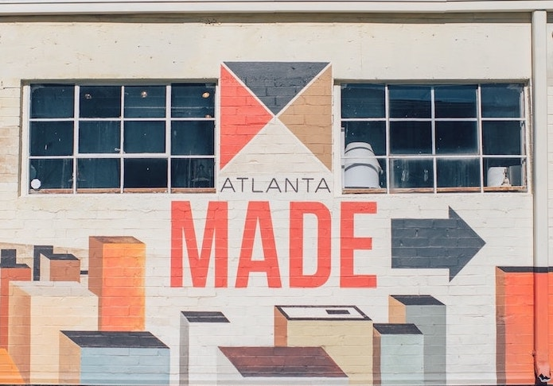

Summary
Hello, my name is Hannah Glasser. I am a software engineer based in Atlanta, GA.

About
photo
My passion for learning how things work and gaining new experiences has led me down a unqiue path. In 2015, I graduated from the University of Georgia with a Bachelor of Science in Agriculture. I worked in a poultry processing plant in Cornelia, GA, before relocating to Atlanta. For 18 months, I honed my ability to work under pressure as a litigation paralegal. I practiced my skills in web development during lunch breaks, nights, and weekends. In June 2018, I started at DigitalCrafts, and began coding full-time.
Why hire me
Work
wORK